JSB Analytics is a marketing agency serving ecommerce, skincare, food, and healthcare brands. Through JSB, I designed web banners, logo explorations, social ads, menu posts, and print flyers for a range of clients.
Explored wordmarks for Tini Bini, from clean geometric type to hand-drawn, sticker-style lettering, with and without a sunglasses mascot, then refined the blocky geometric direction on a modular grid. The client adopted it, added color accents, and now uses it on their live store.
Logo construction
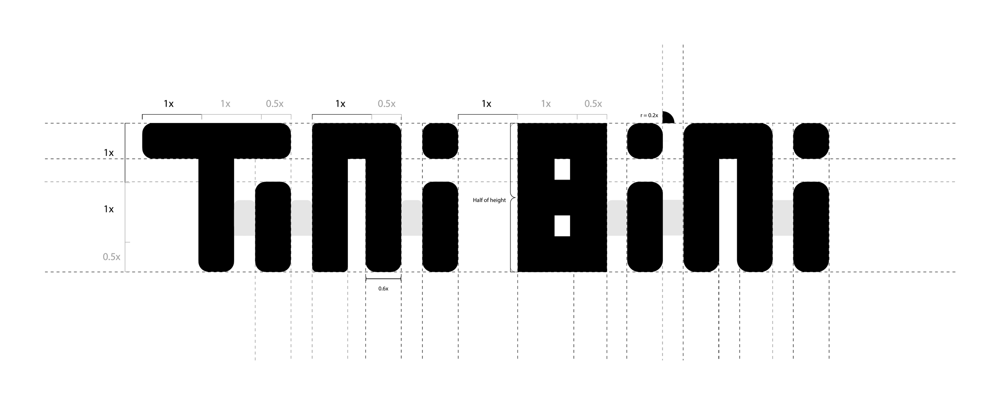
Explorations
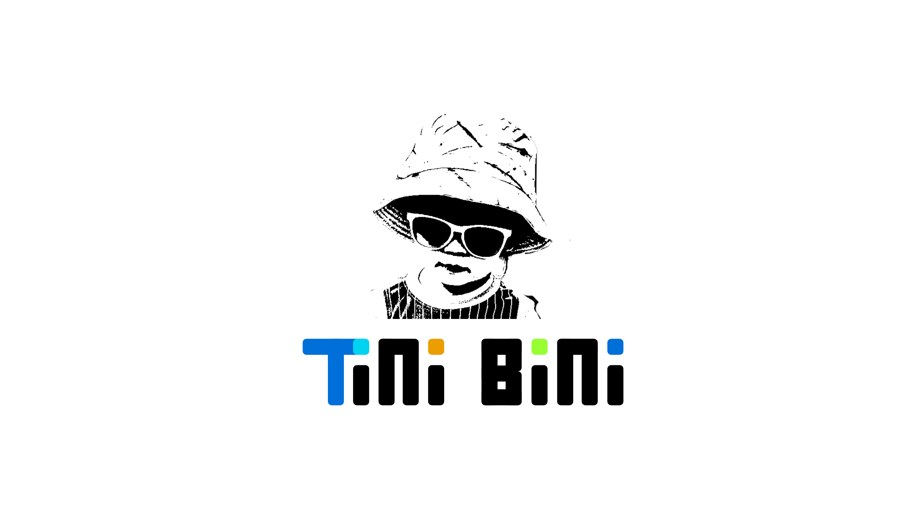
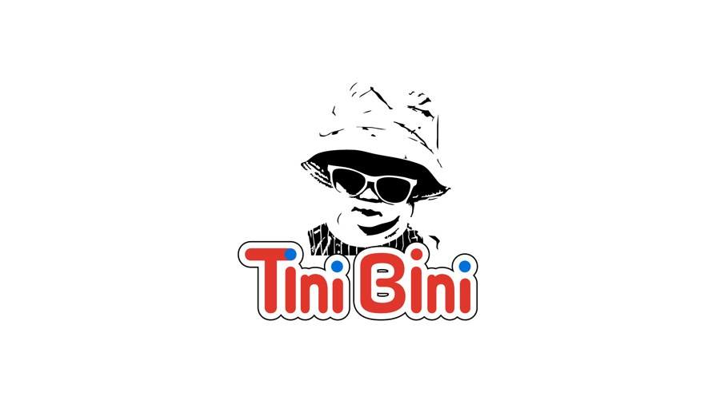
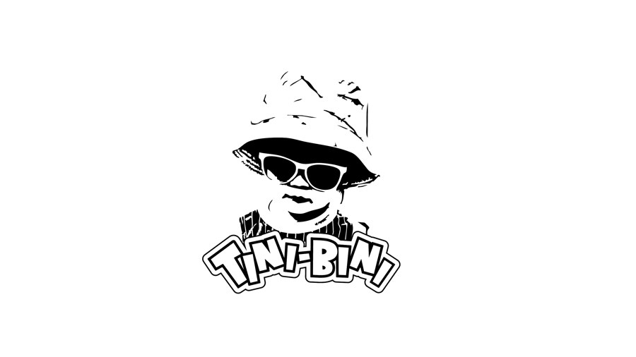
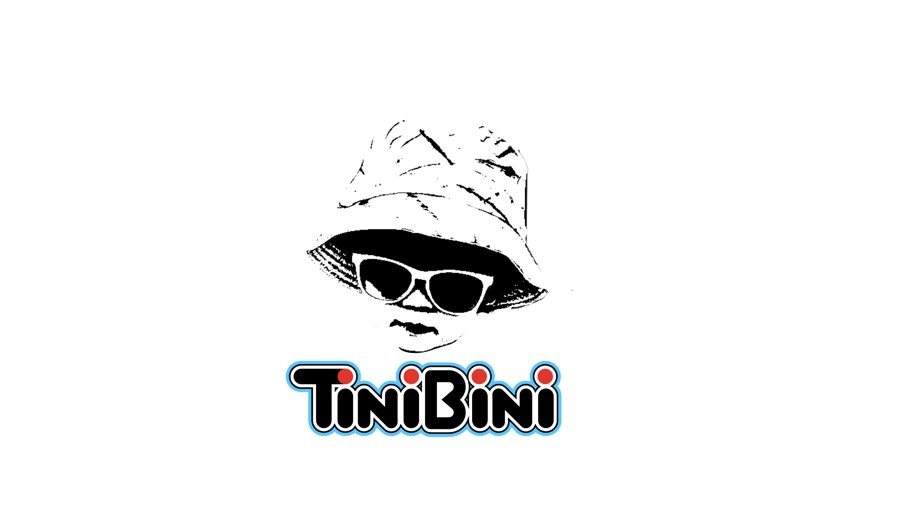
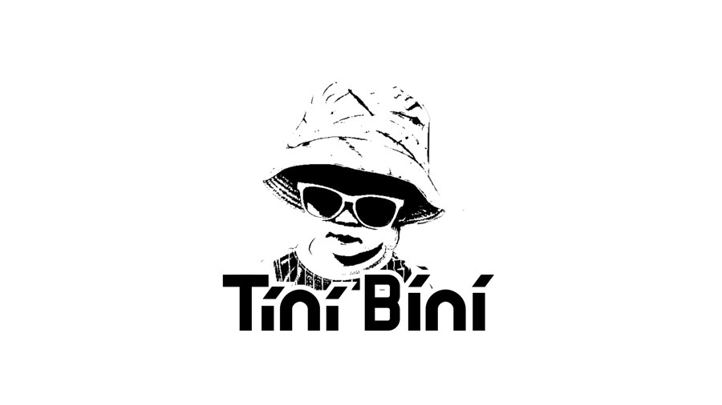
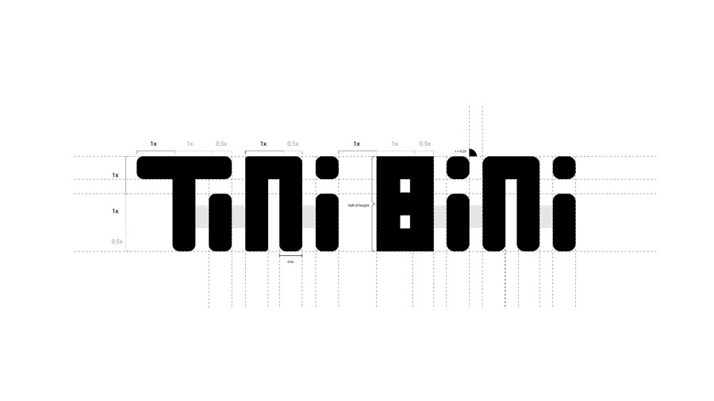
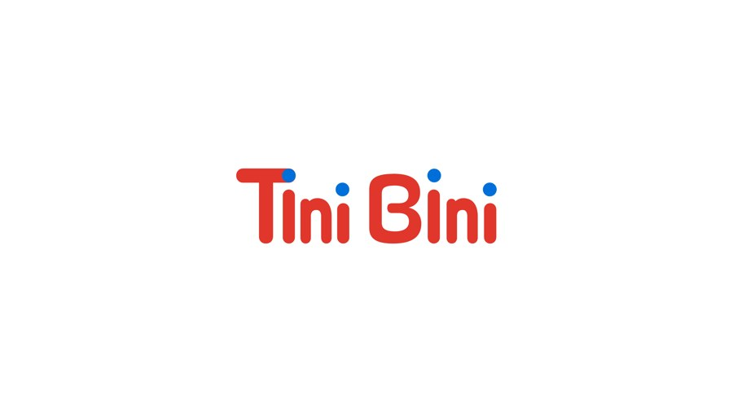
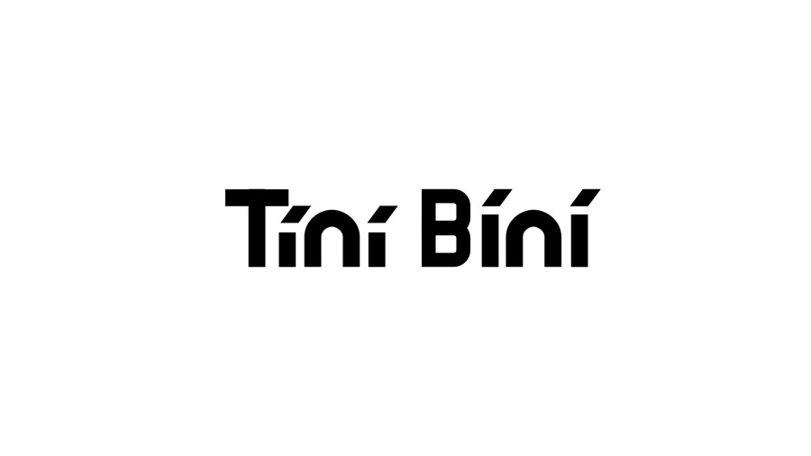
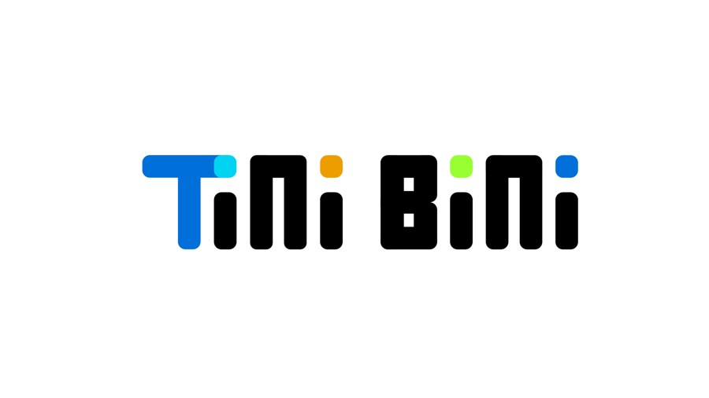
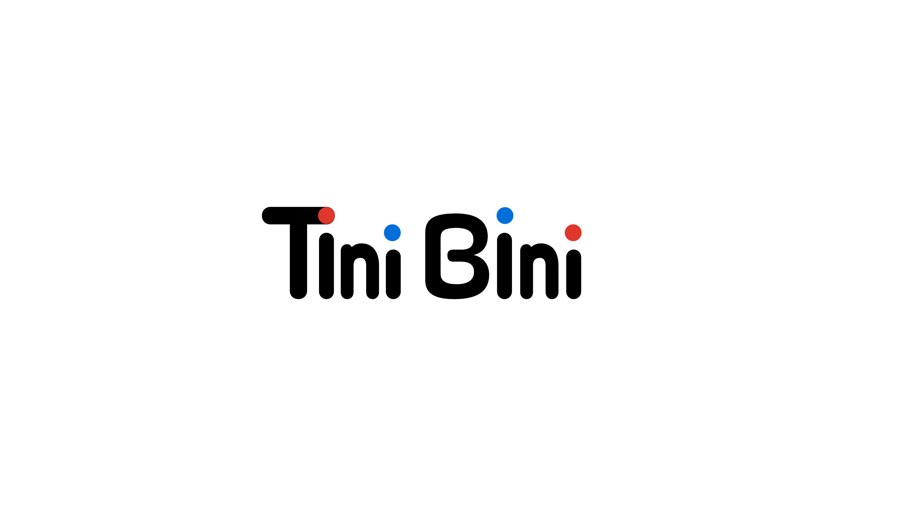
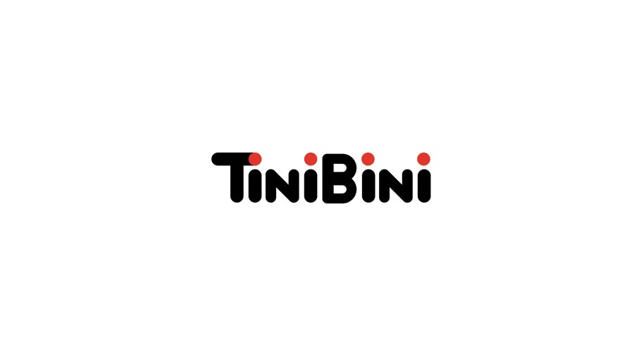
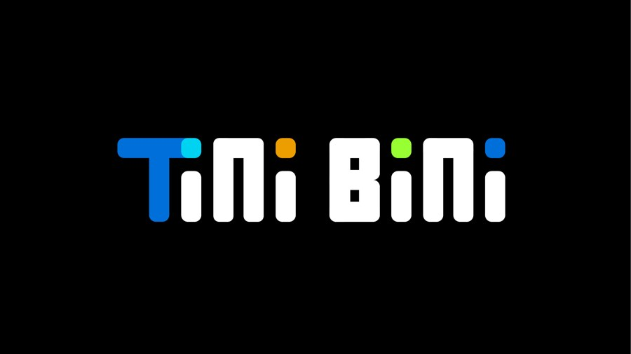
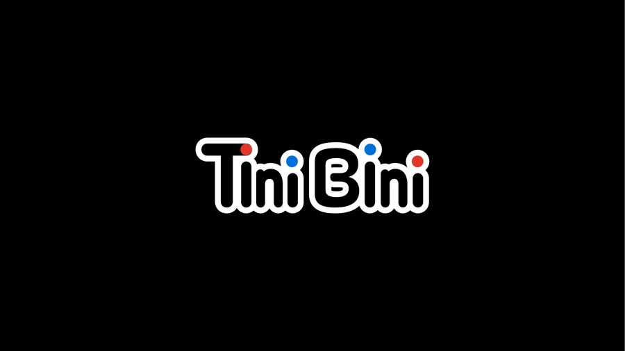
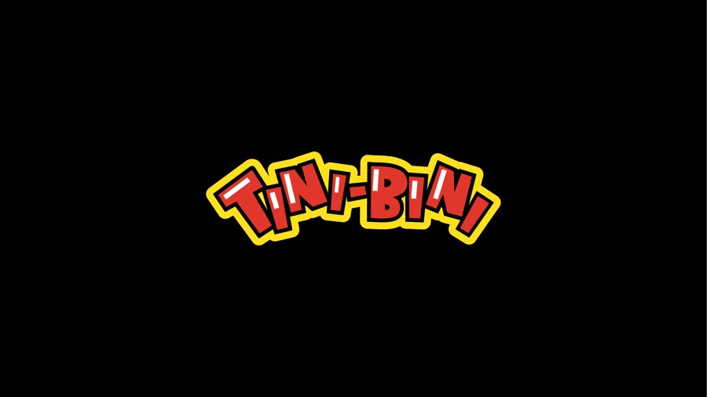
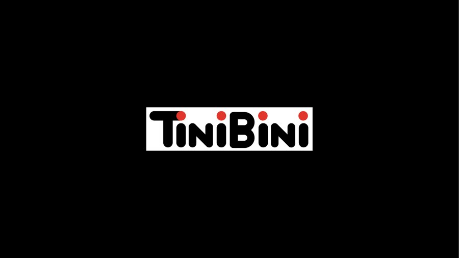
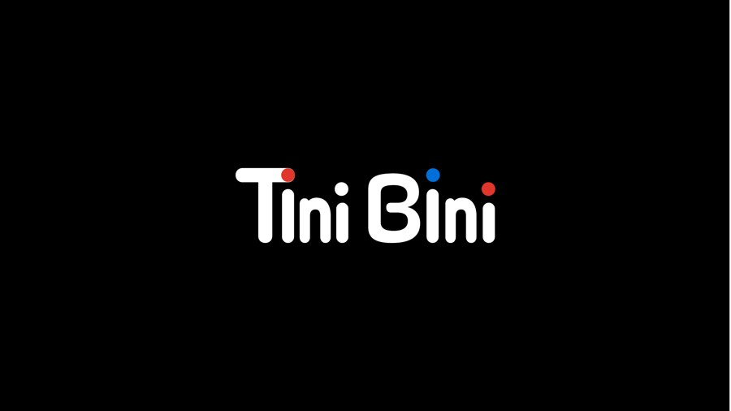
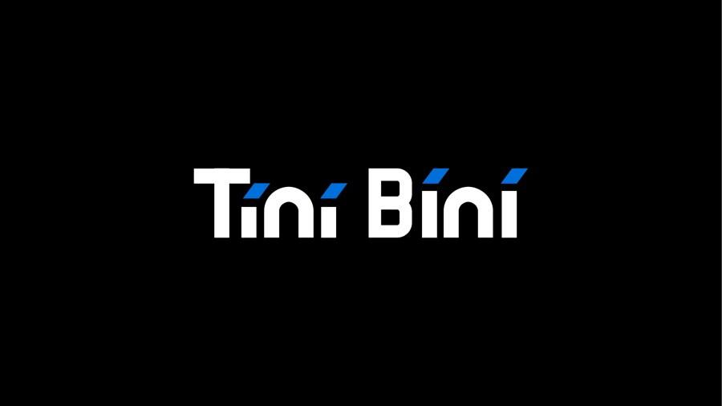
Designed patient flyers for Beverly Hills Brain & Body Center, organizing dense service information into clear, scannable layouts.